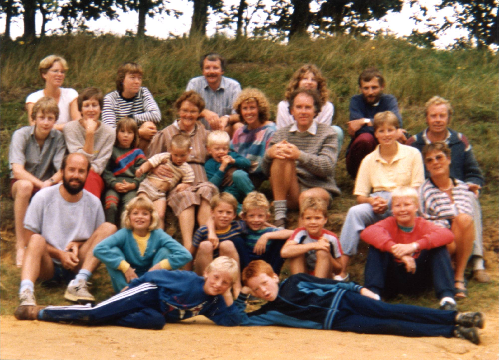
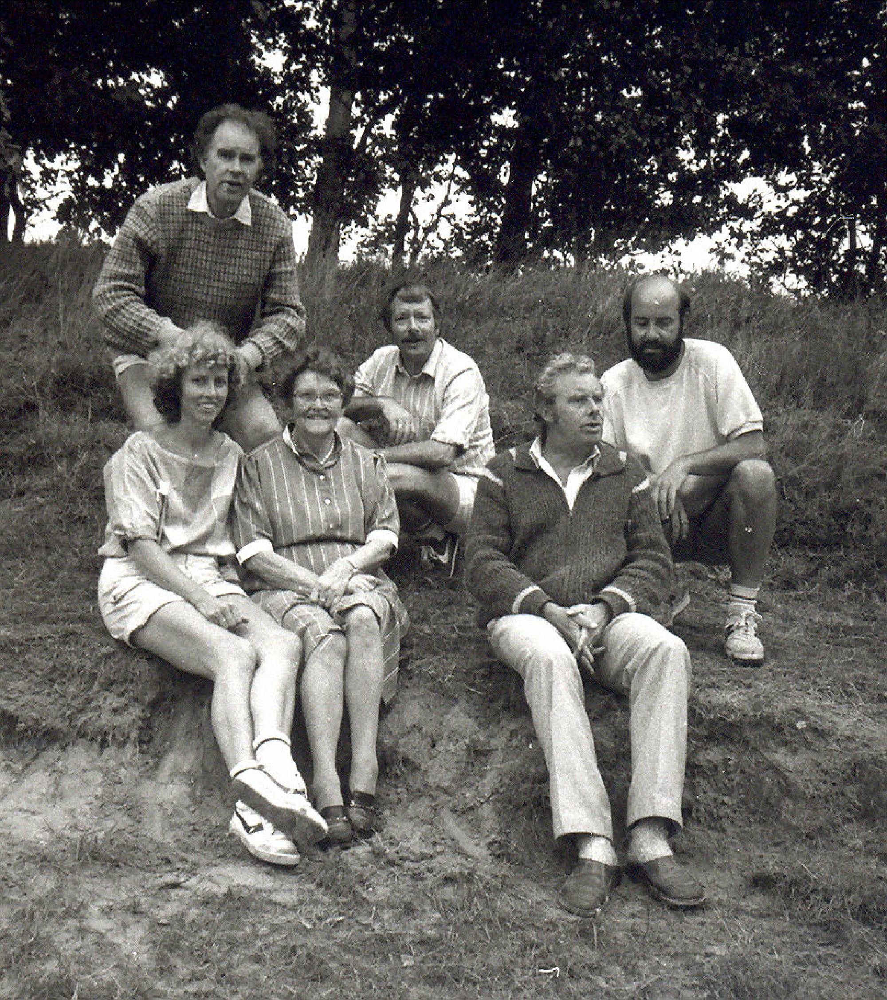
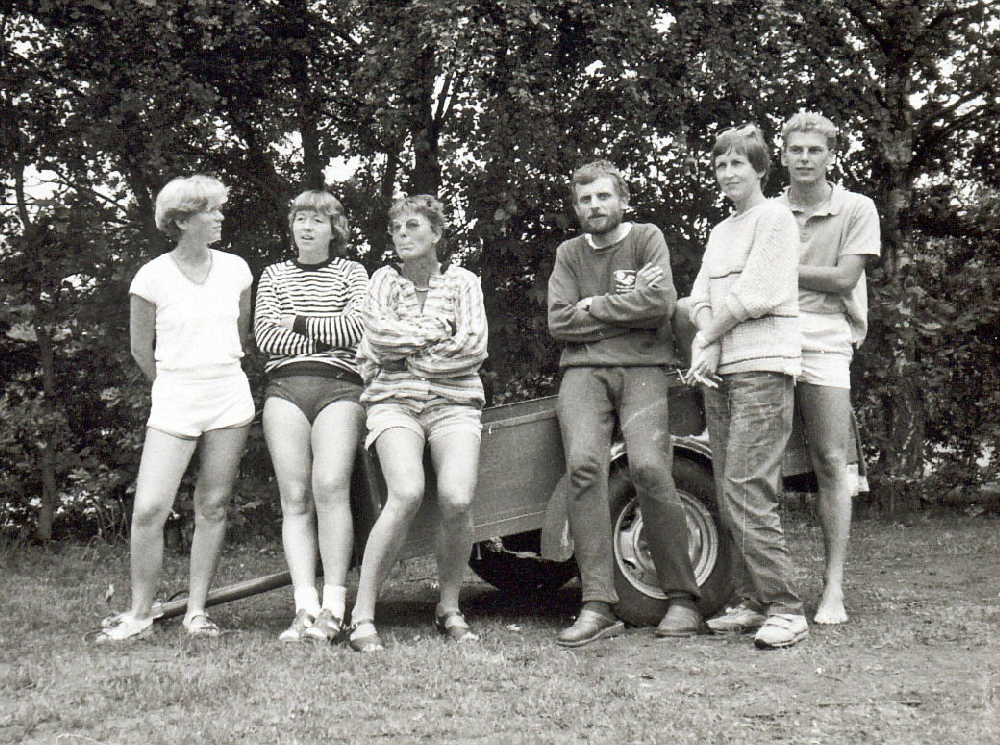
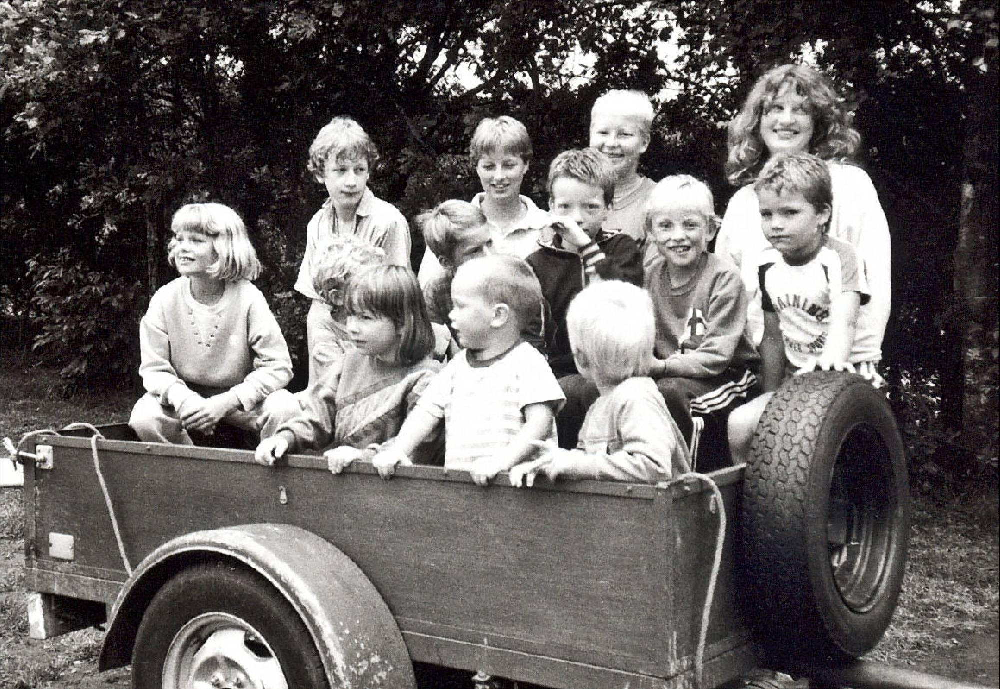

Dit is de website van de familie Maat, afkomstig uit Appingedam. Hier vind je informatie, foto's , stambomen en verder nieuws van en over de familie.
Klik op het pijltje hieronder!


De website is genoemd naar de Mater Familias, Oma Maat. Oma woonde aan de Netweg 28 in Appingedam en was later het centrale punt in het familiegebeuren.

De eerste familiedag vond plaats in 1985 op camping " De Fledders" te Schipborg. De foto's op deze pagina zijn toen genomen.

De site is officieel gepresenteerd tijdens de familiedag van 2003 die overigens in z'n geheel een groot succes was.